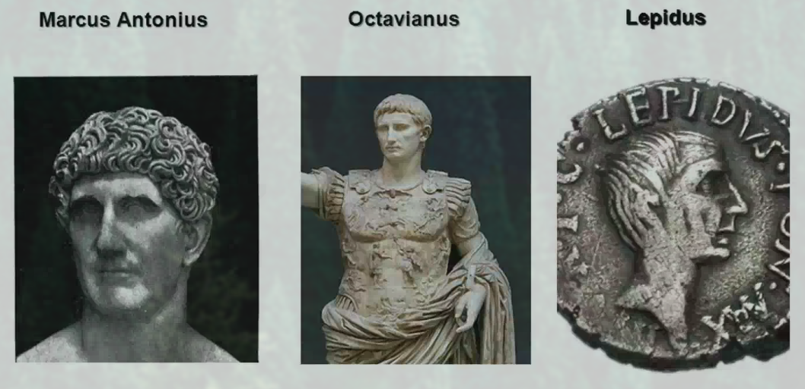

-
prva vojna

-
druha vojna

-
tretia vojna

vysledne provincie:

maju pekne kovy, zavlahove hospodarstvo akokeby vychadzali z orientalnych statov odvodnovali baziny a vytvarali urodnu podu tvorili mestske staty - prave uhly, hranate vodovod a kanalizaciu - cloaka maxima Mesta: Veii a Volsinii
Vraj to bolo ako v tej povesti s dvoma chlapcami, no skutocne ho asi zalozili etruskovia, ale tato myslienka sa rimanom nepacila
vysledne provincie:
latifundium - velkostatkari, vlastnia velke polia, pracuju pre nich otroci, oni nie ze len nepracuju, ale pribudaju im peniaze a stale su vacsi a vacsi. odkupuju male polia a ludia oc na nich pracovali uz nemaju pracu
pracuju pre nich otroci, ktorych je stale viac a viac chudobni ludia im predavaju svoje majetky a idu do miest nemozu si dovolit ist do vojny bohati si u chydobnych kupuju hlasy
tito ludia nemozu ist na vojnu, lebo si to nemozu dovolit - za bol sa vtedy neplatilo
vznikaju problemy hospodarske(peniaze), vojenske(nemozu ist na vojnu), socialne(rozdelenie spolocnosti), spravne(vladnu bohati), moralne(kupuju hlasy)
vznikaju vzbury otrokov
riesia to GRACHOVCI - pozemkove maximum
skusa to riesit GAIUS MARIUS
vznikaju dve politicke strany
populari
Program:
optimati
zacina sa obcianska vojna
hah vyhral Sulla s optimatmi
vznika triumvirat
triumviraty boli dva
samozrejme ze sa navzajom povrazdili az ostal iba julius caesar
34-31 p.n.l
vyhral oktavianus
oktavianus bol prvym cisaron, samozrejme, lebo cezar nemohol byt cisar, kedze to pochadza z jeho mena
social studies for kids na tuto temu - je to celkom kul stranka